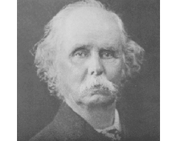

O

ne of the most successful memes of the right in the last decade or so is that redistribution is the politics of envy. Of course politicians have to appeal to the emotions, and they have to appeal to all denominators including the lowest common ones. Well they don't have to and there are limits, but if you're in favour of progressive taxation it's asking too much of a democratic politician to expect them not to point out to those at the bottom of the pile that those further up are doing better than them.But it seems that so high minded am I that I never thought of this as the politics of envy. I thought of it as part of a long and distinguished sensibility of modern reform which, as it turns out is supported with remarkable uniformity by the great economists, from Smith through Mill, Marshall, Pigou and Keynes. That world is disdainful of the value of the "baubles" of power and wealth. Smith was particularly vigorous on the subject, indeed, making irrational hankering of the rich and powerful for baubles one of the major engines of the decentralisation of economic and political power in Europe.
But for all of them, the utility benefits of income encountered strongly diminishing returns once a degree of comfort had set in. As Marshall and Pigou were at pains to point out a dollar to a poor person meets more urgent needs than a dollar to a wealthy one, or to put it another way (which Marshall and Pigou did), other things being equal, dollars going to the poor are a more efficient use of dollars - in achieving the ultimate output (which got called 'utility') than dollars going to the wealthy. (Oh, and of course they would have understood the point that other things are not equal, and that paying money to poor people can have incentive effects, so then one would pursue some joint optimisation problem of optimising utility subject to undesired incentive effects.)
This whole perspective was one that was shared by many reformers in my father's generation. For me one of the touchstones of it in individual conduct is attitudes to classes on airlines. Why would you want to sit in business class? Well the seats and food are nicer, but for three times the price of an economy fare? Are they that nicer? Further there's something a tad awkward about lording it over others by sitting at the front of the plane. Some people who could clearly afford it don't fancy it. The great billionaire philanthropist Chuck Feeney doesn't like flying up the front of the plane as he travels the world giving his money away. That's not like Cardinal Pell, the apostle of Christ for whom business class is not adequate. He travels first.
And in the 1980s and even the 90s I think there were a few politicians who travelled economy class. I think Peter Walsh was one of them. I wonder if any do today. How do the Greens travel? Even by the time I got to the Productivity Commission - then the Industry Commission in 1993 - I'd say maybe 15 odd per cent of the staff entitled to travel business class travelled economy class. I doubt there'd be many there now, but I hope I'm wrong. I recall one Commission meeting where we were encouraged to travel business class.
In any event I came across this post on Alfred Marshall today and its quotes from Marshall reminded me of some of his own aspirations about wealth, and they're worth sharing here:
The truth seems to be that as human nature is constituted, man rapidly degenerates unless he has some hard work to do, some difficulties to overcome; and that some strenuous exertion is necessary for physical and moral health. The fullness of life lies in the development and activity of as many and as high faculties as possible. There is intense pleasure in the ardent pursuit of any aim, whether it be success in business, the advancement of art and science, or the improvement of one's fellow-beings. The highest constructive work of all kinds must often alternate between periods of over-strain and periods of lassitude and stagnation; but for ordinary people, for those who have no strong ambitions, whether of a lower or a higher kind, a moderate income earned by moderate and fairly steady work offers the best opportunity for the growth of those habits of body, mind, and spirit in which alone there is true happiness.
There is some misuse of wealth in all ranks of society. And though, speaking generally, we may say that every increase in the wealth of the working classes adds to the fullness and nobility of life, because it is used chiefly in the satisfaction of real wants; yet even among the artisans in England, and perhaps still more in new countries, there are signs of the growth of that unwholesome desire for wealth as a means of display which has been the chief bane of the well-to-do classes in every civilized country. Laws against luxury have been futile; but it would be a gain if the moral sentiment of the community could induce people to avoid all sorts of display of individual wealth. There are indeed true and worthy pleasures to be got from wisely ordered magnificence: but they are at their best when free from any taint of personal vanity on the one side and envy on the other; as they are when they center round public buildings, public parks, public collections of the fine arts, and public games and amusements. So long as wealth is applied to provide for every family the necessaries of life and culture, and an abundance of the higher forms of enjoyment for collective use, so long the pursuit of wealth is a noble aim; and the pleasures which it brings are likely to increase with the growth of those higher activities which it is used to promote.
When the necessaries of life are once provided, everyone should seek to increase the beauty of things in his possession rather than their number or their magnificence. An improvement in the artistic character of furniture and clothing trains the higher faculties of those who make them, and is a source of growing happiness to those who use them. But if instead of seeking for a higher standard of beauty, we spend our growing resources on increasing the complexity and intricacy of our domestic goods, we gain thereby no true benefit, no lasting happiness. The world would go much better if everyone would buy fewer and simpler things, and would take trouble in selecting them for their real beauty; being careful of course to get good value in return for his outlay, but preferring to buy a few things made well by highly paid labour rather than many made badly by low paid labour.
Nicholas , have you recently flown economy class for 18 hours at a stretch? I am a claustrophobic, there are limits to 'closeness', for me.
That reads a hell of a lot less profoundly to me than I'm sure it does to you. So yes to $500,000 Ferraris but no to six Holden Monaros? Yes to a $150,000 gorgeous diamond necklace but no to a variety of $30,000 watches?
Apart from a vague sense of a fetish for "craft" and a vivid dislike of conspicuous consumption, I struggle to get any sense of what he means or how one could act on it.
If nothing else, the excessive consumption of luxury carbuyers and F1 fans, and their insatiable desire for ever-fancier "gadgets", has created enormous increases in "real wealth" for the consumers of drab ordinary wholly-robot-manufactured vehicles. It isn't clear from the above where Alfred Marshall would sit on that.
john r walker, that's what "Premium Economy" class was invented for - the leg room without the obscenely overpiced status. Besides your point doesn't explain the existence of Business Class on things like the Canberra-Sydney hop (20 mins in the air).
Nicholas, that's a nice explanation of the optimal tax problem. And yes, I think people who talk about the "politics of envy" are trying to frame the issues away.
dd On some airlines ,for long hauls, you can get two biz tickets for the price of one biz ticket-I.e less than the price of two premium tickets. As for Canberra to 'x', we used to have 'frequent flyer' access to the pre-flight Biz lounge (despite flying economy) - it was a lot more comfy and the coffee did not cost $5 for warm brown milk.
Yes I have - four times in the last six months. (Well to be pedantic I don't think there's a passenger plane around that will fly for 18 hours, but I've just been round the world - economy class).
It was fine. Well not great, and if it was an extra couple of hundred dollars I'd pay to stretch out. But it's thousands of dollars more. Thousands. Do I really think I'm so special that I should be spending say 1-3K more on myself for a better sleep for one night?
I guess I have the money to do it, but I'd rather spend it on others than do that. If you've got the money to spend it on a few hours more sleep for one night, good luck to you.
I am better at managing it these days ...however claustrophobia, for me = panic attacks that are not much fun.
I am surprised you think of the politics of envy as something not worthwhile. The early economists you mention were acutely aware that both the penchant for 'baubles' amongst those already rich and the jealousy of the poor regarding the lives of the rich were both to a great degree fueled by a desire for status and the 'envy' that comes with the poor having to witness the status of the rich. I see nothing wrong with advocating redistribution because of envy and, to a certain extent, the success by 'the right' of using the label 'envy' to prop up the position of the rich merely uses the fact that we all tend to lie about our status-seeking tendencies. Its that self-deception that hampers us. The 'right' is using the fact that you cant have your cake and eat it which to me seems fair enough. One might not want to advocate envy as the smart way to live, but by the same token one then also shouldn't tolerate people who flaunt their riches because it raises jealousies. Envy goes both ways: it is felt and it is actively generated for the same underlying reason!
Nicholas
The quote has a whiff of a sort of 'within-class' signaling mechanism- along the lines of ' it is so crass the way the newly rich , flaunt their wealth'... its not how us real top class acts signal.
If they pay their taxes... if people really want to pay a stupid amount for absurdities like a Porsche 4WD, that is their problem, surely?
I'd feel pretty confident that plenty of politicians have framed their claims to stir up feelings of envy and resentment. I think Swan has been trying that. Any reference to obscene wealth is a bit of a clue.
There is no question that you can maximize utility by redistributing from richer to poorer and that there is likely to be a sweet-zone of progressive taxation and redistribution in which maximum utility is achieved. Mind you, the state of maximum utility is going to be harder to find than the higgs bosun and so the most we can hope for is to get reasonably near and keep fudging around as circumstances dictate.
I can't recall any politician framing their position as utility maximising in that sense. I suspect that a good many politicians don't think of it like that. A quick look at the ALP, Lib and Greens websites doesn't reveal any policy statements in those terms.
I don't think there is any sense in which the rich are wrong, let alone wicked, for being rich or for arguing for a different policy on tax and redistribution. Nor do I care about conspicuous consumption, even though I'm happy to sit in economy and drive a ford hatchback. You can't blame the peacock for his tail.
Politicians travelling economy. Yes I saw one. On a recent flight fro Sydney to Roma via Brisbane I sat right next to Barnaby Joyce. In economy class.
Very pleased to hear it. Was there a business class in the plane? With a vacant seat?
Sorry Nicholas, I didn't look. Anyway, the flight from Brisbane to Roma has no business class but the Sydney leg certainly did. Several months later I spotted him on the same journey but on the way back. In economy but I wasn't in the adjacent seat.
Funny thing is that I always thought he was a bit of a prick. Turned out he was quite nice fellow.
Thanks Paul, some astute comments. I guess I agree that in the negative sense "the politics of envy" makes sense - but that was kind of what I said in the opening paragraph. But it's still an odious thing to appeal to.
But you're quite right of course, if you laud conspicuous consumption, then the complementary response from the down at heel is envy.
Then again I've always thought one of the greatest insights into political economy was offered by Algernon in The Importance of Being Earnest “Really, if the lower orders dont set us a good example, what on earth is the use of them?”
nicholas
After the first QLD flood emergency people gave very generously , then the government put a levy on for flood relief. So when the next flood emergency happened there were much less in the way of voluntary donations.
The voluntary community group I belong to does a fair bit , quietly, and its operating costs are very small.
Free association solutions often work better ,than a ever more complex, hierarchical, bureaucracy.
Successful pollies of whatever persuasion are usually personally nice people, crocodile. There is a strong selection effect in politics against people who are visibly pricks in face-to-face interactions (they don't get preselected even), and only a tiny handful of psychopaths can hide prickness for years.
So pollies are almost always privately nice people forced by the incentives they face to behave like public pricks.
A Porsche 4WD would seem to create a lot more obvious problems than other status symbols such as expensive watches. The Porsche 4WD creates pollution, blocks visibility, presents a higher risk in cases of collisions and causes more wear to road surfaces. But I guess the basis of libertarian thinking is to focus only on yourself so it doesn't surprise me that few owners would be aware of their impact on others.
Yes heavy vehicles do all of what you say, regardless of whether they cost 40 thou or 100 thou. Mind virtually all modern cars use a lot less fuel and are safer for all than cars of say 10 years ago regardless of size.
The Porsche Suv is not much diff to other cheaper Suvs .......buying a SUV simply because it has the same badge as a '2 seat' type sports car, is absurd.
Ps I am no libertarian.
True- and then there's Kevin Rudd
Agreed. Well put.
Hi Patrick,
I appreciate that you don't agree with it, but I'm a bit dismayed that you can't see anything in it. I guess if you see it as trying to impose some strictures from the outside as it were, via public notions of 'taste' it seems pretty off. If on the other hand you think of it as some heartfelt expression of what he thinks of as worthwhile - which is then expressed outwardly it's a different thing. I see it as an expression of personal modesty - and I hope you regard modesty or humility as a virtue.
Generally speaking, purchasing a flash car is a highly conspicuous thing to do. Of course it could be done because of a deep love of cars, or beautiful things and/or the love of its design and/or craftsmanship. But mostly such things are bought for show. Is Marshall trying to organise some mass movement of snobbish disapproval? I don't know. I doubt it, but such consumption is generally undertaken for reasons that are associated with its conspicuousness. He's saying that that is not to be admired while taking pleasure in beautiful things is to be admired. I don't know if you agree, but a lot of people would understand what he's getting at.
Further he's lauding the idea that public munificence is a venue in which instincts of aggrandisement can be advanced in a way that is ethically edifying. I think one might say that such public pursuit of beauty is ethically similar to bravery in defence of others rather than just oneself, and actions born of patriotism rather than simple self-interest.
Hi John,
I expect the reverse is the case. Spontaneous outpouring may be an exception, but whenever I bump into philanthropy I can't help but think of all the time and money wasted wining and dining important people, having 'functions' in which people lavish very large lunches on each other, dress up to the nines, jockey for positions next to the important people and all the rest. How much of the effort and the money gets to the beneficiaries. And of course the beneficiaries have to be worthy - and of course worthy when judged from a distance. They have to be photogenic too. Guide dogs - well puppies anyway - starving kids. Not adults with cleft lips, or the unemployed or those with bad backs.
Of course government is the mirror image of this. It's revenue raising is usually (I'm thinking) a fair bit more efficient, and it can give money according to more 'objective' criteria. Naturally enough that's not always a good thing, but often it is.
was not thinking of the sort of professional tax deductible philanthropy you have just accurately described... that is mostly just privatised government.
The stuff I am talking about is quietly done.
This seems like the argument of a slave master (or any other elite ruler) justifying their position of giving other people work to do, because you know, it's for their own good really. Imagine the decay if left to themselves!
It also makes a good justification for a status system, give that people tend to strive for status anyhow, might as well keep them occupied while they do it. For their own good of course. A status system provides incentive to strive but using envy as a motivational force (especially a political motivational force) offers the temptation of quick success -- rather than work hard up the ranks, just rip down the people who seem to be ahead of you. For society as a whole, envy becomes self destructive (although it probably benefits some individuals) as the envious focus their energy on seeking ways to tear other people down, and those who have something to lose focus their energy on guarding, or hiding what they do have.
That sounds like an argument against welfare.
Envy sounds like a good way to describe the attitude of those against welfare.
Can you provide a definition for "welfare" that fits your comment?
I am in no way opposed to my neighbours maximising their own welfare, however they see fit to do that. I am opposed to a central planning committee deciding that they know how I should live my life, because they claim to have my welfare at heart. I very much suspect that you have a different idea of what welfare is exactly, but I doubt you have thought about it in detail.
E.g. welfare:
The policy of moving single parents onto newstart has been supported with both the "its good for them" argument and the "they don't deserve financial security, gotta take it away" envy argument.
Wherein the politics of envy..!
What would you know and why would you care? I can assure you that the people buying outrageously expensive cars are the ones subsidising the development of your next car, which is already highly likely to have curtain airbags, park assist, semi-automatic freeway driving, highly sophisticated ABS braking, more exotic compounds helping you do things like stop faster and steer more reliably than you can shake a stick at, a gearbox that changes itself faster than Alan Moffat ever could, etc.
So when you next see passing an outrageously expensive car/SUV, you should perhaps say thank you.
I certainly have no problem with public munificence.
Indeed I think personal modesty has much to commend it and I wish I had more of it. I'm afraid I find those comments very hard to read other than as you suggest, correctly, that I have.
There is another aspect of it, too. As you suggest I am not very comfortable with the particular idea of 'taste' which I think permeates the piece.
I think that your comments on fancy cars are very wrong, I would have thought that the craftmanship and their perceived beauty are perhaps the two main appeals of a fancy car! But that's just an illustration of why I have a problem with his idea of taste.
More important is how that translates into choosing what should be admired. I think that in general the world is far better off when rich people buy flashy cars than when they buy art - perhaps if they were commissioning art the case would be different, but let's stick to buying off the shelf. Their purchase of a car basically subsidises my next purchase of a car, what's not to like? The rich man's air travel of 1960 is my family reunions of 2010, just as is the rich man's obscenely expensive business class of 1990 my economy class of 2010 (not exactly, yet, but in many ways, not least time and food, I'd rather economy now than business then).
You can probably see where I'm going. I think that the greedy pursuit of wealth, motivated to varying degrees by envy, has done more than most to create the age of comfort and opulence in which we now thrive. I might not personally aspire to conspicuous displays of wealth (not having any to conspicuously display I wouldn't know) and my own personal views of taste are probably not so far removed from his, even if I would love a fancy car, in part for its craftmanship and beauty, at least as much as a Caravaggio (which I would quite like). I think that there is a more rotten core of 'class' reflexes in the way he has expressed his views which I associate with the misery and poverty of the pre-1900s world.
Patrick We have 2 , 2nd hand poshish cars, They are both stylish , quick , handle very reliably , have all the extras and safety was an obsession for their maker. We are very happy to get luxury cast offs, for less than the price of a Barrina.... However I still reckon that Porsche's SUV, is strictly for the worst sort of dentist.. :-)
Surely the beauty of an airliner is that it redistributes wealth in a purely voluntary manner. Without the people paying handsomely to sit in splendour up in the front, many of the people in the back could not afford to travel at all.
However this beautifully symbiotic redistribution works in both directions. You *can* operate business-class only flights - and indeed, if you can fill them, these are highly profitable. Except there is one problem. Business travellers like to fly with airlines which offer frequent flights to the destination, giving them flexibility and saving needless hours spent away from home. Without economy class passengers you cannot operate sufficiently frequent flights. Hence most airliners are configured for mixed classes.
Price discrimination can often benefit everyone. In fact I can hardly think of an area where it works to the benefit of all more than in air-travel. Yield management pricing is another beautiful idea, where poorer people get to enjoy airliners and trains at low prices when the cash-rich and time-poor don't need them.
Generally I am wary of academics disparaging material status-symbols. They do this because they have a status currency of their own (tenure, a parking space at the faculty, a Nobel prize) and so are naturally eager to devalue other people's success markers. I think it was V Postrel who remarked that academics can rank their fellows in status more readily than a courtier at Versailles.
Thanks Rory,
I think you put your case very well. And it makes my instincts less socially productive than they might seem. I can still observe that the whole thing is not to my taste, but there are no doubt some practical benefits from it as you note. I suspect if he were alive today Marshall would have travelled economy class (but who knows?)
Oh - one other thing - I'm not an academic and I don't like the kinds of status games they, or public servants play. On the other hand I would say that snobbiness about how smart people are is odious, but slightly less odious than snobbiness about how wealthy or powerful they are. I'm not sure I can justify that though.
Nicholas
Less Murray on the difference between - the luxury of Sprawl and - "idiot ostentation" .
This is an interesting thread, so thanks for all your responses. It's very difficult to avoid misunderstanding because there's lots going on and a lot of it is quite subtle. Anyway, a few points for what it's worth.
Moralising about what is others' business is not a pretty sight. If people want to buy expensive cars that really is pretty OK with me. Personally I don't. (However I have other indulgences which others don't have, though I like to keep them special, so don't have them all the time. Like French Champaign for instance. So I'm not in a great position to moralise about others' choices.)
Then again everything we do has references to the culture we're in. If - to use an image John Walker has just given us - someone lights cigars with ten dollar bills (it won't work very well in Oz since we brought in plastic but I digress), then that's culturally loaded behaviour. It's (likely to be) directed outward. And it's not behaviour of which I approve.
Of course you can read that as if I think I'm some big arbiter of public taste, in which case you could be pretty irritated by it, or you could read it as quite a modest thing - I personally don't approve, I disapprove because such approvals and disapprovals are the stuff of public culture, and I don't regard myself as having any more right to influence people on that score than anyone else. So I'm not preoccupied about it, or campaigning about it, but if I see such behaviour I think "what a jerk" (though even here, I'm aware that I don't know the full story - maybe the person who's done it is a really good person.)
I feel similarly towards someone who buys 20 half million dollar cars on getting successful. But that's just little old me. That's the way I feel. But I don't think that people have some obligation to show 'taste' so if they want to buy a fancy car - let's say we all agree it's not for the aesthetics of it, well then that's fine - they're just minding their own business, like I do when I listen to some pop song rather than some great composer.
I think Marshall would have thought similarly. And I think the snobbiness that Patrick detects is the product of the time. Marshall is the embodiment of a strong Victorian sense of the cultural mission of the sobriety of the middle classes, and the importance of 'respectability' to which he's trying to graft his own values - of the value of public over private munificence - I guess Galbraith updated the idea six decades later in The Affluent Society - though that was an appeal to policy as an expression of culture rather than culture as a driver as in Marhsall's writing.
Thank you so much for this reply. And accept my apologies - I never meant to imply you were guilty of this attempt to depreciate other peoples' status symbols. I only meant to say that the most ardent attacks on consumerism usually come from those who are rich in other forms of status.
The really significant economic problem that arises from status seeking seems to me to be the residential property market - where competition for finite resources is entirely rivalrous, and where a huge amount of money comes to be spent in an activity which - unlike air travel - is economically unproductive and has no spill-over benefits for anyone else.
Thanks, and yes, I can accept your point, but I'm seeing us as something more than economic beings. It's true that business class confers benefits on less wealthy folk that the mansions of Toorak and Double Bay do not, but there's a lot going on culturally in business class, and in some ways I dislike its symbolism more. But that's again a matter of taste or something like that. You're right about the economics.
I've met him briefly and liked him.